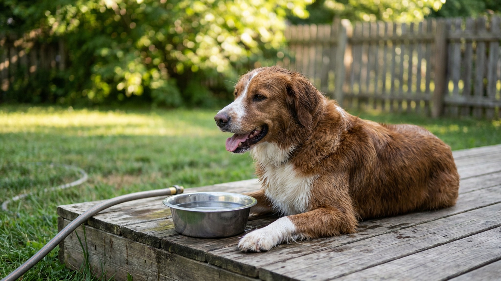

Водная интоксикация у собаки летом: смертельная редкость, о которой не знают

5 июня 2026 · 9 минут чтения · Неотложка · Лето · Собаки
Собака гоняется за струёй воды из шланга, захватывает её пастью, плещется в озере — весёлая летняя картинка. Но за этой игрой может скрываться смертельная угроза: гипонатриемия, она же водная интоксикация. Заглатывание большого количества воды за короткое время разбавляет натрий в крови до критических значений, и мозг отекает. Это происходит быстро, выглядит как усталость, но заканчивается судорогами и комой. Большинство хозяев никогда не слышали о таком диагнозе — и именно поэтому упускают время.
Что такое водная интоксикация и почему она опасна
Водная интоксикация — это острая гипонатриемия: состояние, при котором концентрация натрия в крови падает ниже нормы из-за избытка воды. Натрий — ключевой электролит, который регулирует давление внутри клеток и межклеточной жидкости. Когда воды в организме становится слишком много, клетки начинают поглощать её и набухать.
Мозг находится в жёстком пространстве черепа — ему некуда расшириться. Отёк мозговой ткани ведёт к нарастающей неврологической симптоматике: от вялости до потери сознания и смерти. Процесс может занять от 1 до 4 часов с момента появления первых симптомов.
У здорового взрослого человека выпить достаточно воды за такое короткое время крайне сложно физически. У собак всё иначе: они заглатывают воду непрерывно во время игры — не из жажды, а рефлекторно. Шланг с напором, мяч, брошенный в пруд, прыжки через волны — во всех этих ситуациях собака может за 20-30 минут принять внутрь критический объём.
Кто в группе риска
Водная интоксикация — это не болезнь слабых или больных собак. Это состояние чаще всего поражает здоровых, энергичных, мотивированных животных, которые сильнее всего увлекаются игрой с водой.
- Мелкие породы — меньше масса тела, тот же объём заглоченной воды даёт более резкое падение натрия. Шпицы, джек-рассел-терьеры, корги, тойпудели в группе высокого риска.
- Молодые активные собаки — те, кто играет не останавливаясь, игнорируют усталость и сигналы тела.
- Фанаты водных игр — собаки, которых хозяева приучили «ловить» воду из шланга или гоняться за брошенным в воду предметом.
- Купальщики в открытых водоёмах — особенно те, кто ныряет, активно плещется пастью по поверхности воды.
- Собаки с высокой пищевой и игровой мотивацией — ретриверы, бордер-колли и другие рабочие породы, которые не остановятся, пока хозяин не остановит.
Важно: водная интоксикация не требует никаких предрасположенностей. Это чисто физический механизм — слишком много воды за слишком короткое время.
Симптомы: что и в какой последовательности
Первые признаки появляются, как правило, через 15-30 минут после окончания игры. Многие хозяева в этот момент думают, что собака просто устала от активности. Это главная ловушка.
- Вялость и апатия — собака, которая минуту назад неслась за мячом, вдруг ложится и не реагирует на зов. Не просто усталость, а именно резкое «выключение».
- Тошнота и рвота — может быть однократной, что создаёт ложное ощущение облегчения.
- Вздутие живота — живот визуально увеличивается из-за скопившейся воды.
- Нарушение координации — собака шатается, спотыкается, не может пройти прямо.
- Расширенные зрачки — один из ранних неврологических признаков, который легко пропустить.
- Бледные или синеватые дёсны — признак нарушения кровообращения.
- Судороги — поздний и очень тревожный признак. На этой стадии счёт идёт на минуты.
- Кома — финальная стадия при отсутствии лечения.
Критически важно: симптомы нарастают быстро. Если вы увидели вялость и рвоту после водных игр — не ждите, пока появятся судороги. К этому моменту ситуация уже критическая.
Почему это смертельно: механизм отёка мозга
Когда концентрация натрия в плазме крови падает ниже нормы (у собак норма примерно 140-150 ммоль/л), осмотический градиент меняется. Клетки начинают поглощать воду из межклеточного пространства и набухают. В большинстве тканей это не смертельно — лишний объём уходит. Но нейроны головного мозга ограничены черепом.
Нарастающее внутричерепное давление сначала нарушает функции коры (вялость, дезориентация), затем ствол мозга (судороги, нарушение дыхания) и, наконец, приводит к вклинению мозга в затылочное отверстие — это несовместимо с жизнью.
Лечение в клинике — внутривенное введение гипертонического раствора натрия хлорида под строгим контролем. Вводить соль слишком быстро тоже нельзя: резкое поднятие натрия после острой гипонатриемии может вызвать демиелинизацию нервных волокон (осмотический демиелинизирующий синдром). Это работа только для ветеринарной реанимации.
Профилактика: 6 правил для летних игр с водой
Водная интоксикация полностью предотвратима. Не нужно лишать собаку удовольствия от воды — нужно управлять процессом.
- Никогда не используйте шланг как игрушку. Непрерывная струя воды под давлением — самый быстрый способ обеспечить заглатывание большого объёма за короткое время. Шланг для полива, не для игры.
- Паузы каждые 10-15 минут. Вынимайте собаку из воды и давайте ей отдохнуть. Не ждите, пока она сама остановится — не остановится.
- Размер игрушки имеет значение. Апортировочный предмет должен быть достаточно большим, чтобы собака не захватывала вместе с ним воду. Маленький мяч = постоянное заглатывание воды при захвате.
- Ограничивайте время купания в открытых водоёмах. Особенно для собак, которые активно плещутся пастью по воде или ныряют. 20-30 минут — максимум для активной игры в воде.
- Следите за животом. Если живот начинает увеличиваться во время игры — немедленно заканчивайте.
- Знайте своих зону риска. Если у вас мелкая порода или очень мотивированная собака — ограничения должны быть строже. Не «покупаю поменьше», а «активная игра в воде не для нас».
Что делать при подозрении на водную интоксикацию
Это неотложная ситуация. Порядок действий чёткий.
- Немедленно звоните в ветеринарную клинику или скорую ветпомощь, пока едете. Предупредите, что везёте собаку с подозрением на водную интоксикацию — чтобы они были готовы к реанимационным мероприятиям.
- Не давайте ничего пить. Любая дополнительная жидкость ухудшает ситуацию.
- Не давайте соль перорально. Это не лечение — это дополнительный риск.
- Не ждите «подождём, может само пройдёт». Гипонатриемия не проходит сама. Без внутривенной коррекции ситуация только ухудшается.
- Сохраняйте собаку в спокойном состоянии. Возбуждение ускоряет нарастание симптомов. Накройте, если дрожит.
- Зафиксируйте время появления симптомов. Это важная информация для врача — скорость прогрессирования говорит о тяжести.
Прогноз при своевременном лечении — хороший. Прогноз при появлении судорог — осторожный. Прогноз при коме — серьёзный. Время решает всё.
Водная интоксикация vs. тепловой удар: как не перепутать
Оба состояния случаются летом, оба дают вялость и нарушение ориентации. Ключевые отличия:
- Тепловой удар: горячая сухая кожа или слизистые, тяжёлое частое дыхание, температура тела выше 40°C. Развивается в жару без воды или физнагрузки на жаре.
- Водная интоксикация: собака только что была в воде или активно играла с водой, живот может быть вздутым, нарушение координации приходит раньше дыхательных нарушений.
Подходы к лечению разные. Если есть сомнения — всё равно в клинику, описывая оба сценария врачу.
Насколько часто это происходит: реальная статистика
Водная интоксикация у собак — это не повседневная история, но и не единичные случаи из медицинской литературы. Ветеринарные клиники в странах с развитой культурой активного выгула фиксируют несколько случаев в год на регион. В русскоязычном сегменте ветеринарной практики публикаций мало — не потому что случаев нет, а потому что нет широкой культуры ведения журналов случаев.
Реальный риск выше в следующие периоды:
- Жаркое лето, когда хозяева специально поливают собак из шланга «чтобы охладить».
- Выходные у воды — озёра, реки, дачи с открытыми водоёмами.
- Первые жаркие дни сезона, когда и хозяева, и собаки ещё не привыкли к температуре и играют дольше обычного.
Знание о существовании этого состояния буквально спасает жизни: хозяин, который знает о водной интоксикации, при вялости после водных игр сразу едет в клинику, а не ждёт «пока само пройдёт».
Лечение в клинике: что происходит
Водная интоксикация — это реанимационная ситуация, требующая специализированного оборудования и постоянного мониторинга. Понимание того, что будет происходить в клинике, помогает хозяину принять правильное решение о скорости обращения.
- Диагностика. Анализ крови на электролиты (натрий, калий, хлор), глюкозу, мочевину. Результат — в течение нескольких минут при наличии экспресс-анализатора. Именно уровень натрия подтверждает диагноз.
- Гипертонический раствор натрия. Основное лечение — внутривенное введение 3% раствора хлорида натрия. Вводится медленно, под строгим контролем: слишком быстрое повышение натрия после острой гипонатриемии само по себе опасно.
- Фуросемид. Диуретик для выведения избытка воды. Применяется параллельно с коррекцией натрия.
- Мониторинг. Электролиты контролируются каждые 1-2 часа. Собака на капельнице, часто в кислородной камере.
- Манnitol или гипертонический раствор при отёке мозга. Если есть неврологические симптомы — добавляют препараты, снижающие внутричерепное давление.
При своевременном обращении — до появления судорог — прогноз благоприятный. При судорогах — осторожный. При коме и длительной задержке с лечением — тяжёлый. Время от появления симптомов до начала лечения — главная переменная.
Как правильно организовать летние водные игры
Запрещать собаке воду — не нужно. Вода — это радость, охлаждение в жаркий день, физическая нагрузка. Задача — сделать игру безопасной.
- Бассейн вместо озера для активных игр. В неглубоком детском бассейне объём заглатываемой воды контролируется лучше, чем на открытом водоёме.
- Апортировка у берега, не в глубокой воде. Если собака ныряет за предметом — она заглатывает значительно больше воды, чем если подбирает его у кромки.
- Плавание без предмета. Спокойное плавание рядом с вами — намного безопаснее, чем «погоня за мячом в воде».
- Знайте объём желудка своей собаки. Для маленькой собаки весом 5 кг критический объём воды — около 500-600 мл. Это примерно 10-12 больших глотков за короткое время. Звучит много, но при игре с шлангом — за 15-20 минут.
Счастливая, мокрая собака — это хорошо. Счастливая, мокрая собака под присмотром с паузами каждые 10-15 минут — это ещё и безопасно.
Итог
Водная интоксикация — редкое, но реальное и смертельное состояние. Большинство случаев происходит в тёплое время года, во время активных игр с водой, с молодыми и энергичными собаками. Симптомы — вялость, рвота, нарушение координации — легко принять за усталость. Промедление стоит жизни.
Три главных правила профилактики: никогда не используйте шланг как игрушку, соблюдайте паузы в водных играх каждые 10-15 минут, выбирайте крупные апортировочные предметы. Если что-то пошло не так — немедленно в клинику, без ожидания, с предупреждением по телефону что везёте именно с этим подозрением.
← Все статьи · Открыть AnimaLife в Telegram · RSS